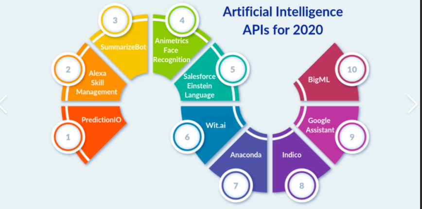

The applications for artificial intelligence are endless. The technology can be applied to many different sectors and industries. AI is being tested and used in the healthcare industry for dosing drugs and different treatment in patients, and for surgical procedures in the operating room. Other examples of machines with artificial intelligence include computers that play chess and self-driving cars. Each of these machines must weigh the consequences of any action they take, as each action will impact the end result. In chess, the end result is winning the game. For self-driving cars, the computer system must account for all external data and compute it to act in a way that prevents a collision. Artificial intelligence also has applications in the financial industry, where it is used to detect and flag activity in banking and finance such as unusual debit card usage and large account deposits—all of which help a bank's fraud department. Applications for AI are also being used to help streamline and make trading easier. This is done by making supply, demand, and pricing of securities easier to estimate
